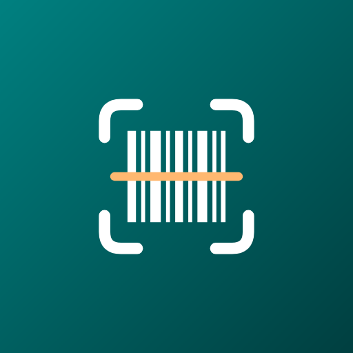

BarcodeVault
App de inventario con escáner de códigos de barras para Android
BarcodeVault es una app de inventario gratuita con escáner de códigos de barras para Android. Convierte tu móvil en un contador de stock rápido para almacenes, tiendas, trastiendas e inventarios en casa: escanea, cuenta y exporta tu inventario a Excel, CSV o PDF. El recuento funciona sin conexión y tus registros se quedan en tu dispositivo.
Ideal para
- Tiendas y comercios – inventario, recuento de stock y control de entregas
- Almacenes y trastiendas – existencias por ubicación, pasillo y estante
- Oficinas e IT – control de activos con números de serie (los duplicados se rechazan con aviso)
- Pequeños negocios – vendedores online, cafeterías, farmacias, bibliotecas y colecciones
Escanea y cuenta
Escaneo continuo con sonido y vibración. Elige qué pasa con los códigos repetidos: sumar a la cantidad, avisar o añadir otra fila. Toca Terminar para guardar o compartir al momento.
Excel, CSV y PDF
Exporta cualquier recuento a Excel (.xlsx), CSV o un informe PDF listo para imprimir con un toque. Se conservan los ceros iniciales. Incluido en BarcodeVault Pro.
Códigos QR y de barras
Crea códigos QR para enlaces, Wi-Fi y contactos, o códigos EAN, UPC y Code 128. Guarda en PNG, JPG, PDF o SVG, o imprime.
Fotos y PDF
Lee todos los códigos de barras y QR de una foto de la galería o de un PDF y añádelos a un recuento. Incluido en Pro.
Copias y recordatorios
Copias de seguridad automáticas diarias o semanales, cifrables con AES-256 y tu contraseña. Recordatorios opcionales de tus recuentos.
Privacidad primero
Sin cuenta. Recuentos, notas, fotos y copias se quedan en tu dispositivo; solo si activas la copia en Drive se guarda una copia en tu propio Google Drive. Gratis con anuncios, o sin anuncios con Pro.
Lectores y unidades
Usa la cámara, un lector Bluetooth o un terminal portátil (Zebra, Honeywell y más). Cuenta por unidad, caja, kg o litro, y cuenta una caja entera con un solo escaneo.
Cómo hacer inventario con el móvil
- Crea un recuento y ponle nombre, por ejemplo «Tienda 1 – noviembre».
- Escanea los códigos de barras con la cámara. Cada escaneo suma 1; escribe un número para cajas y añade una ubicación o una nota.
- Toca Terminar y exporta el recuento con Pro a Excel, CSV o PDF para tu gestoría o tu ERP.
Herramientas para inventarios grandes
Gratis con anuncios: igual que la creación de códigos QR y de barras, cada herramienta se desbloquea durante 1 hora con un vídeo corto. El escaneo de imágenes y el Excel combinado forman parte de BarcodeVault Pro, que abre todas las herramientas sin anuncios.
- Escaneo de fotos y PDF (Pro) – lee todos los códigos de una foto o PDF y añádelos a un recuento.
- Excel combinado (Pro) – varios recuentos en un libro, con totales por código de barras.
- Búsqueda global – escribe o escanea un código y mira en qué recuentos aparece, con cantidades y ubicaciones.
- Comparar con el stock esperado – importa tu lista (Excel o CSV) y ve faltantes, sobrantes y diferencias.
- Impresión de etiquetas – imprime muchos códigos de barras o QR en hojas de etiquetas A4 en PDF.
- Catálogo de productos – importa tu lista de productos (Excel o CSV) y ve nombres y unidades en lugar de solo códigos.
- Combinar recuentos – une los recuentos de varios teléfonos en uno solo con las cantidades totales.
Continuar un recuento, los tres primeros recuentos nuevos de cada día y las copias en el teléfono nunca requieren vídeo. BarcodeVault Pro es una suscripción mensual con 3 días de prueba gratis: sin anuncios, exportación a Excel, CSV y PDF, escaneo de imágenes y copia en Google Drive.
Preguntas frecuentes
¿BarcodeVault es gratis?
Sí, BarcodeVault se descarga gratis y se financia con anuncios. Tres recuentos nuevos son gratis cada día; los siguientes, la creación de códigos QR y de barras y las herramientas se desbloquean durante 1 hora tras un vídeo corto. La suscripción opcional BarcodeVault Pro (mensual, con 3 días de prueba gratis) elimina todos los anuncios y añade la exportación a Excel, CSV y PDF, el escaneo de imágenes y la copia en Google Drive.
¿Funciona sin conexión?
Sí. El escaneo, el recuento, la exportación y las copias de seguridad funcionan sin internet. El reconocimiento de códigos se hace en el móvil; internet solo se usa para los anuncios, las compras de Pro, las actualizaciones y la copia opcional en Google Drive.
¿Qué tipos de códigos de barras lee?
22 tipos, entre ellos QR Code, Micro QR, rMQR, Data Matrix, PDF417, Aztec, MaxiCode, EAN-13, EAN-8, UPC-A, UPC-E, Code 128, Code 39, Code 93, ITF, Codabar y la familia GS1 DataBar.
¿Puedo exportar mi inventario a Excel?
Sí, con BarcodeVault Pro. Cada recuento se puede guardar o compartir como Excel (.xlsx), CSV o informe PDF imprimible. Se conservan los ceros iniciales y los códigos iguales pueden unirse en una fila con la cantidad total.
¿Dónde se guardan mis datos?
En tu dispositivo. No hay cuenta. Las copias de seguridad pueden cifrarse con AES-256 y tu propia contraseña y, con Pro, puede guardarse una copia en tu propio Google Drive.
¿Está disponible para iPhone?
No. BarcodeVault es una app para móviles con Android 8.0 o posterior, disponible en Google Play.